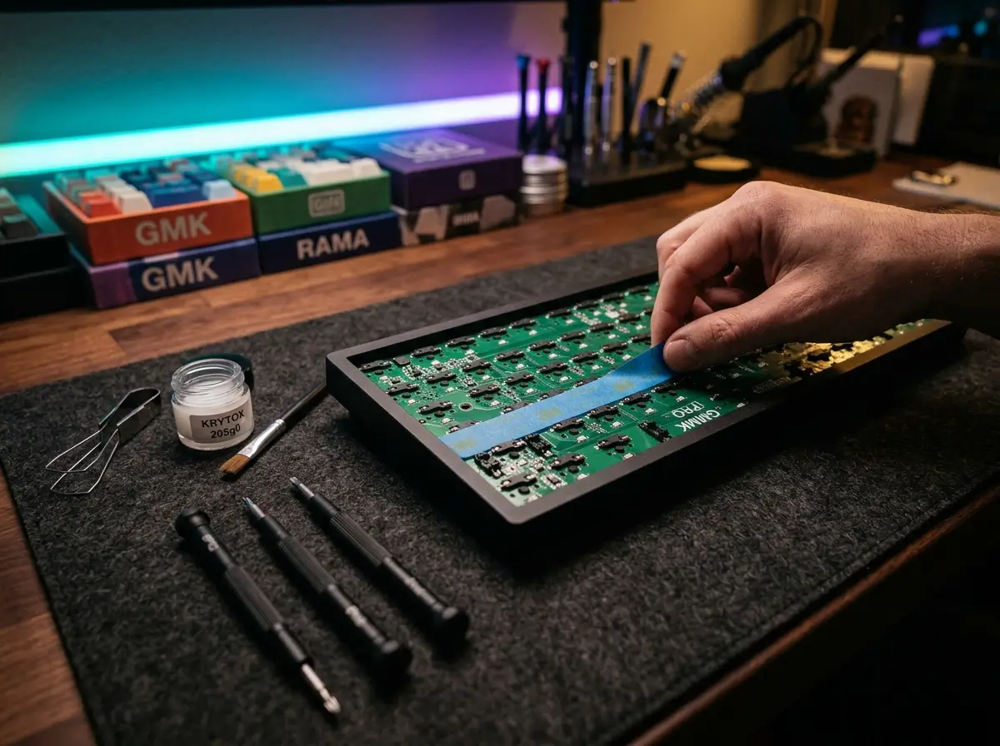

How to Make Your Mechanical Keyboard Sound 'Thocky' (3 Easy Mods)
You've bought the perfect barebones kit, installed premium tactile switches, and topped it off with Cherry profile keycaps. But when you start typing, it sounds hollow, rattly, and high-pitched. Welcome to the final frontier of the mechanical keyboard hobby: acoustic tuning. Achieving that deep, satisfying, bass-heavy sound—universally known as "Thock"—doesn't require a degree in sound engineering. With just a few household items and 30 minutes of your time, you can completely transform the acoustic profile of any budget keyboard.
🎧 The Mechanical Acoustic Spectrum
Visualizing the frequency targets for custom keyboard sound profiles.
Mod 1: The Tempest Tape Mod (Bass Booster)
The Tempest Tape Mod is arguably the most famous and effective acoustic mod in the hobby. It acts as a low-pass audio filter, absorbing high-pitched "ping" noises while reflecting deeper frequencies back up through the keycaps.
- How to do it: Disassemble your keyboard until you have bare access to the back of the PCB (the green circuit board). Apply 2 to 3 layers of standard blue painter's masking tape directly covering the back of the board.
- Warning: Only use blue painter's tape or masking tape. Never use duct tape, electrical tape, or packing tape, as they leave conductive residue that can permanently short-circuit your keyboard.
Mod 2: Case Foam / Poly-Fill (The Echo Killer)
If your keyboard sounds like you are typing inside a tin can, you have an echo problem. Cheaper plastic and aluminum cases have hollow cavities beneath the PCB that cause sound waves to bounce around violently.
- How to do it: Open your keyboard case and fill the empty plastic voids at the very bottom. You can use specialized high-density Neoprene foam, automotive Kilmat, or simply steal a handful of Poly-fill from a cheap craft pillow. Pack it firmly, but don't overstuff it to the point where the case won't screw back together.
Mod 3: Tuning Your Stabilizers (The Rattle Fix)
The spacebar, enter, and shift keys use metal wires called "stabilizers" to balance the long keycaps. If these wires are bone dry, they will rattle against their plastic housings, ruining an otherwise perfect thock sound.
- How to do it: Remove your large keycaps and use a syringe (or a fine brush) to inject a thick dielectric grease or specialized Krytox 205g0 lubricant directly where the metal wire snaps into the plastic housing. This creates a cushion that completely mutes the metallic ticking sound.
The Perfect Combo
To achieve the ultimate thock, you need synergy. Combine these 3 chassis mods with a dense, low-pitched keycap profile (like Cherry or SA) from our Keycap Profile Guide, and ensure you are using Linear or Tactile mechanical switches. Clicky switches cannot be thocky!
Karim
Wireless desk enthusiast and mechanical keyboard obsessive. I test, review, and tear down tech to help you build the perfect, clutter-free setup.